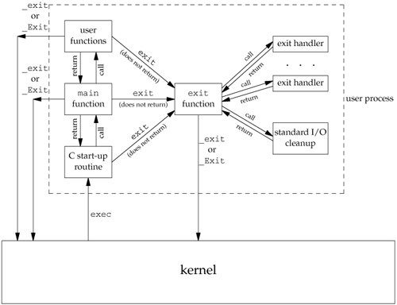

7.3. Process TerminationThere are eight ways for a process to terminate. Normal termination occurs in five ways:
Abnormal termination occurs in three ways:
The start-up routine that we mentioned in the previous section is also written so that if the main function returns, the exit function is called. If the start-up routine were coded in C (it is often coded in assembler) the call to main could look like
exit(main(argc, argv));
Exit FunctionsThree functions terminate a program normally: _exit and _Exit, which return to the kernel immediately, and exit, which performs certain cleanup processing and then returns to the kernel.
We'll discuss the effect of these three functions on other processes, such as the children and the parent of the terminating process, in Section 8.5.
Historically, the exit function has always performed a clean shutdown of the standard I/O library: the fclose function is called for all open streams. Recall from Section 5.5 that this causes all buffered output data to be flushed (written to the file). All three exit functions expect a single integer argument, which we call the exit status. Most UNIX System shells provide a way to examine the exit status of a process. If (a) any of these functions is called without an exit status, (b) main does a return without a return value, or (c) the main function is not declared to return an integer, the exit status of the process is undefined. However, if the return type of main is an integer and main "falls off the end" (an implicit return), the exit status of the process is 0.
Returning an integer value from the main function is equivalent to calling exit with the same value. Thus
exit(0);
is the same as
return(0);
from the main function. ExampleThe program in Figure 7.1 is the classic "hello, world" example. When we compile and run the program in Figure 7.1, we see that the exit code is random. If we compile the same program on different systems, we are likely to get different exit codes, depending on the contents of the stack and register contents at the time that the main function returns:
$ cc hello.c
$ ./a.out
hello, world
$ echo $? print the exit status
13
Now if we enable the 1999 ISO C compiler extensions, we see that the exit code changes:
$ cc -std=c99 hello.c enable gcc's 1999 ISO C extensions
hello.c:4: warning: return type defaults to 'int'
$ ./a.out
hello, world
$ echo $? role="italicAlt"print the exit status
0
Figure 7.1. Classic C program
#include <stdio.h>
main()
{
printf("hello, world\n");
}
In the next chapter, we'll see how any process can cause a program to be executed, wait for the process to complete, and then fetch its exit status. atexit FunctionWith ISO C, a process can register up to 32 functions that are automatically called by exit. These are called exit handlers and are registered by calling the atexit function.
This declaration says that we pass the address of a function as the argument to atexit. When this function is called, it is not passed any arguments and is not expected to return a value. The exit function calls these functions in reverse order of their registration. Each function is called as many times as it was registered.
With ISO C and POSIX.1, exit first calls the exit handlers and then closes (via fclose) all open streams. POSIX.1 extends the ISO C standard by specifying that any exit handlers installed will be cleared if the program calls any of the exec family of functions. Figure 7.2 summarizes how a C program is started and the various ways it can terminate. Figure 7.2. How a C program is started and how it terminatesNote that the only way a program is executed by the kernel is when one of the exec functions is called. The only way a process voluntarily terminates is when _exit or _Exit is called, either explicitly or implicitly (by calling exit). A process can also be involuntarily terminated by a signal (not shown in Figure 7.2). ExampleThe program in Figure 7.3 demonstrates the use of the atexit function. Executing the program in Figure 7.3 yields
$ ./a.out
main is done
first exit handler
first exit handler
second exit handler
An exit handler is called once for each time it is registered. In Figure 7.3, the first exit handler is registered twice, so it is called two times. Note that we don't call exit; instead, we return from main. Figure 7.3. Example of exit handlers
#include "apue.h"
static void my_exit1(void);
static void my_exit2(void);
int
main(void)
{
if (atexit(my_exit2) != 0)
err_sys("can't register my_exit2");
if (atexit(my_exit1) != 0)
err_sys("can't register my_exit1");
if (atexit(my_exit1) != 0)
err_sys("can't register my_exit1");
printf("main is done\n");
return(0);
}
static void
my_exit1(void)
{
printf("first exit handler\n");
}
static void
my_exit2(void)
{
printf("second exit handler\n");
}
|